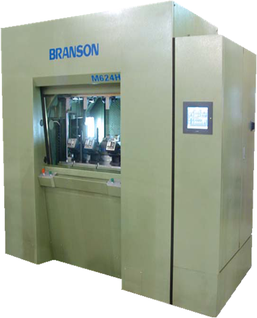

振动摩擦焊接机
设备图片

生产制造商
必能信是美国艾默生电气集团所属子公司，创立于1946年，至今有60多年历史。公司主要生产各类超声波焊接设备、振动摩擦焊接设备、热板焊接设备、旋转焊接设备、超声波金属焊接设备、超声波清洗设备和超声波细胞粉碎设备等。公司在全球范围内拥有70多个销售网点和近2000名员工，并在美国、加拿大、墨西哥、德国、斯洛伐克、中国、中国香港、日本以及韩国设立有研发和生产基地。公司发展历程及业务
原理介绍
在压力下磨擦到一起直到生成的磨擦和剪切热量接触面达到充分熔融状态。当达到设定焊接深度时（由线性传感尺测量），相对运动停止，进入保压阶段焊缝冷却并固化。
设备规格及性能
设备型号：AV502H
额定功率：18KW 设备性能：
额定功率：18KW 设备性能：
采用固态化焊接，焊接过程可靠性高，焊接件的尺寸精度较高，可控制在0.01mm左右；
焊接过程为半自动化方式，人工上下料即可，生产效率高，理论焊接次数最高可达900次/天
设备稳定性较高，故障率低，维修时间短，最短可在3-5分钟内快速恢复生产状态
设备采用安全光栅保护，操作安全性高，事故发生率为0
设备需能量仅为传统工艺的20%左右，且焊接过程中不产生火花、弧光和有害气体等，是一种清洁环保的工艺
设备使用情况
该设备自2012年12月正式验收后投入生产，已累计投入生产约12,000个小时，焊接次数大约在1400,000次左右,停机故障率为0